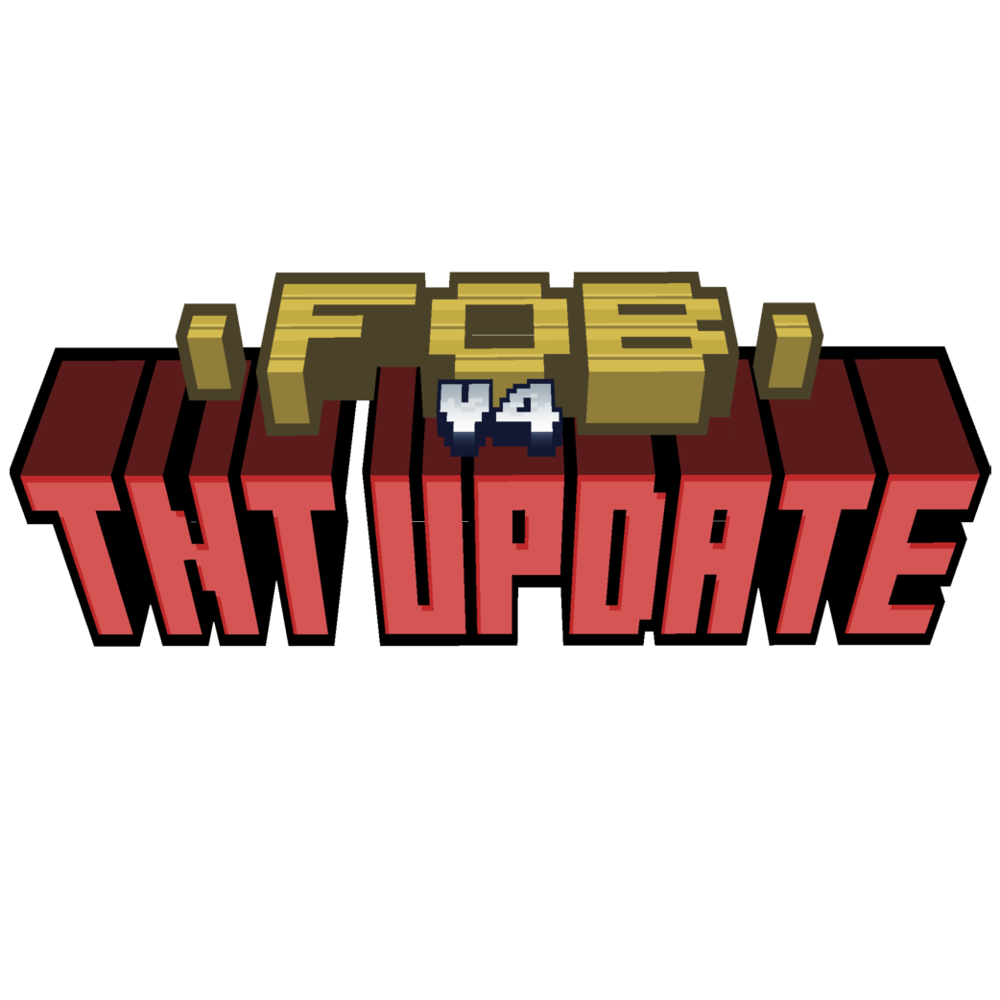
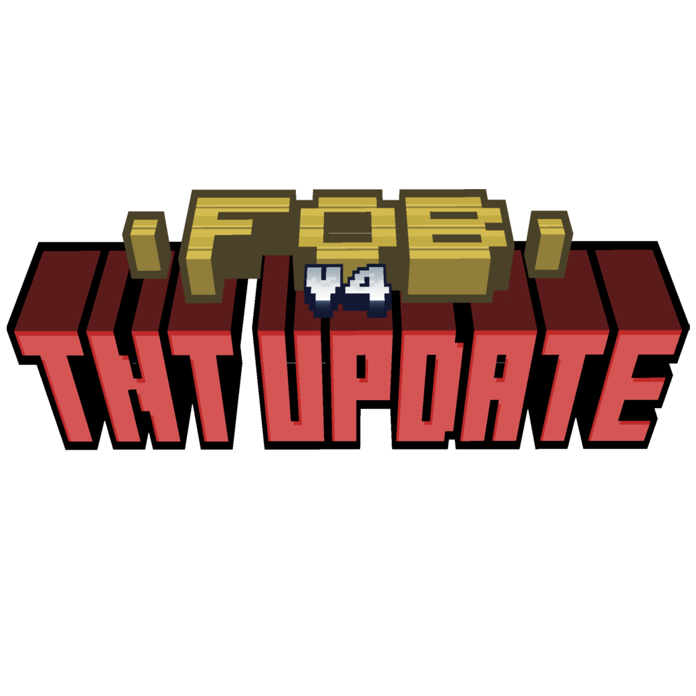

Toutes les infos sur FOB V4 | TNT Update - Phase 2 sont situés juste en dessous


 



A propos de FOB V4 - TNT Update | Phase 2
La seconde Phase de la TNT Update est sortie peu après la première, plus précisément le 5 Décembre 2021. Cette version est, contrairement à la première Phase, moins gourmandes en ajout de TNT avec ici, 10 TNT au compteur. Comme par exemple l'arrivée de la Jolan $quad TNT ou même de la TNT de minerai de Diamant et de tous les autres minerais, déjà présent de base dans Minecraft. Et bien sûr, un nouveau minerai est aussi arrivée, et comme dans la première phase, il s'agit ici du premier minerai trouvable dans le Nether, et il s'agit du minerai de Quartz Rose.